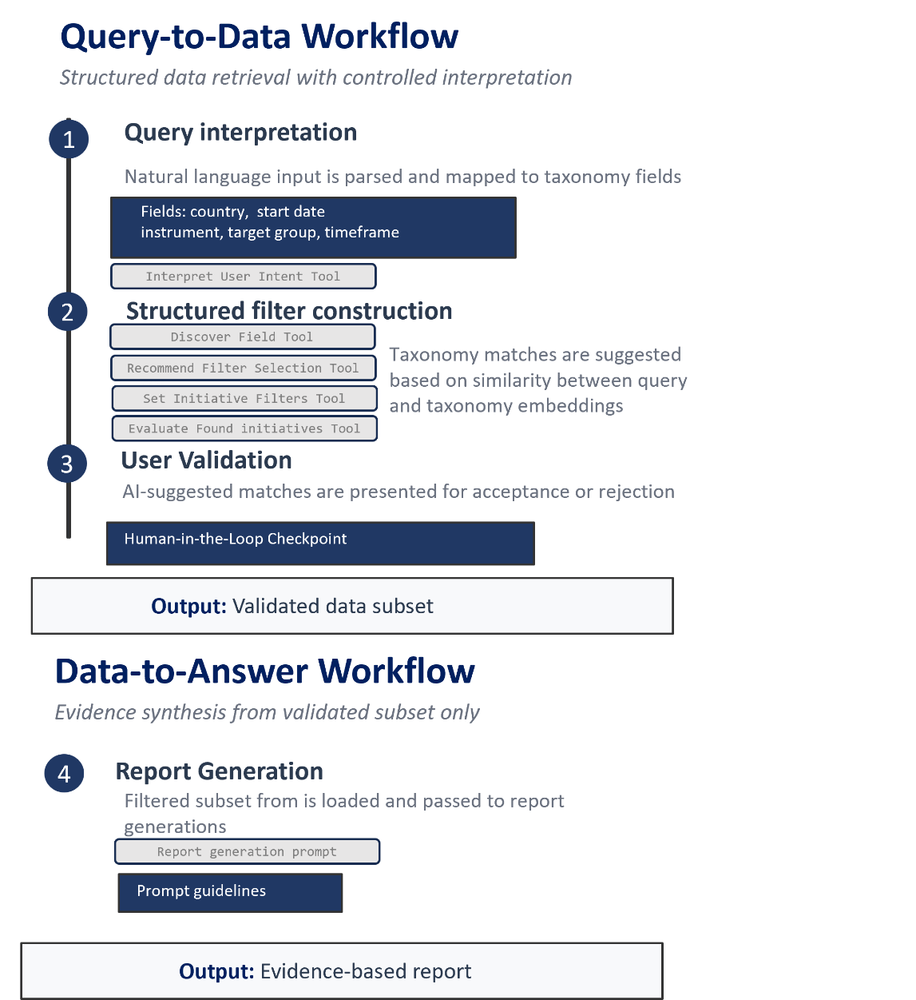
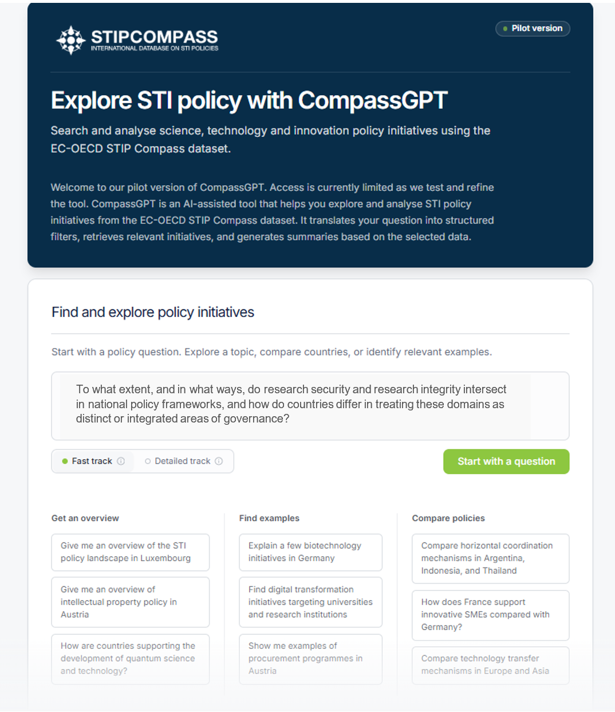
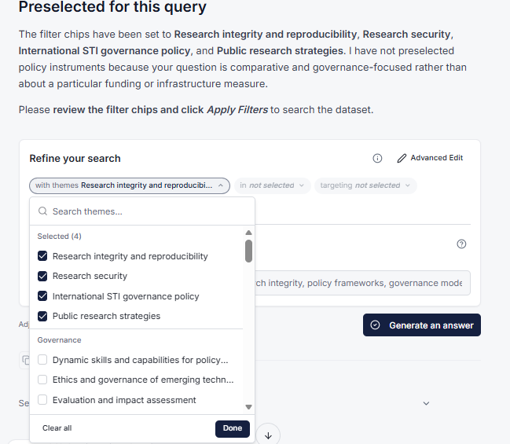
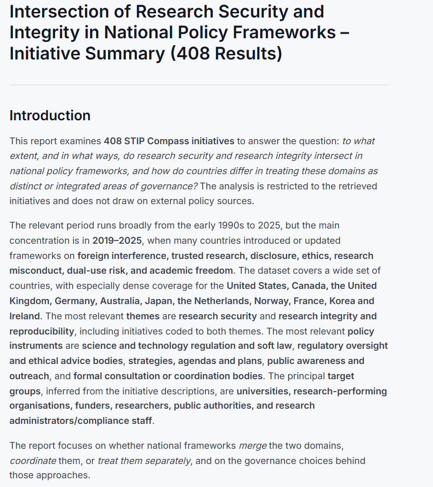
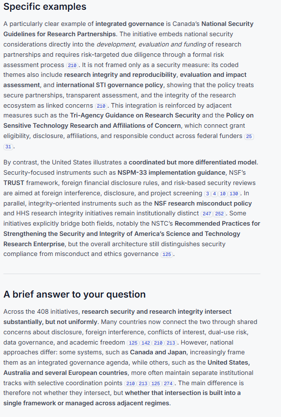

Introduction
This data story presents a new way of interacting with science, technology and innovation (STI) policy data, based on a structured large language model (LLM) pipeline applied to the EC-OECD STIP Compass database. LLMs are reshaping how evidence is retrieved and synthesised across domains including scientific research and literature review (Asai, et al., 2026); (Garcia, et al., 2024). The STI policy field is no exception. With vast and rapidly changing information on policy initiatives across countries, extracting structured insights remains challenging.
The STIP Compass database assembles a substantial and well-curated corpus, comprising data on close to 8,800 policy initiatives and 12,500 policy instruments collected through the STIP Survey. Although publicly accessible, effective use requires some familiarity with a detailed taxonomy organised around policy themes, instruments and target groups. This creates a cognitive barrier for some users to understand the data and use it, since extracting insights depends on navigating various classification systems and manually assembling subsets of initiatives before synthesis can begin. A difficulty therefore lies not only in interpreting policy information, but in enabling structured interaction with a large taxonomy-based dataset in ways that support exploration, comparison and analysis.
To address this challenge, the OECD has developed CompassGPT, a custom AI-augmented research assistant designed to operationalise analytical tasks used in STI policy analysis. The system translates natural language questions into structured queries against the STIP Compass dataset, retrieves a bounded and traceable subset of initiatives, and produces synthetic summaries grounded exclusively in the retrieved material.
The first CompassGPT experiment, presented in 2024, examined whether an LLM could make the database easier to query using a retrieval-augmented generation (RAG) system. The subsequent prototype develops this concept further. Using a combination of methods, it separates evidence selection from synthesis, exposes the proposed retrieval choices to the user and constrains report generation to a defined set of records. This data story focuses on the latest version of CompassGPT, explaining how it was built, the use cases that it enables, and some of the implications for future policy analysis.
2. Designing an LLM pipeline for interaction with STIP Compass
2.1. Design principles
The design process for CompassGPT was guided by the principles of transparency, traceability, reliability, safety and testability. These principles informed the pipeline design through a clear separation between retrieval and synthesis, a use case-driven development process, the use of guardrails, and an interface that keeps analytical steps visible while preserving user control when working with STI policy data. This aligns with the OECD AI Principles, which emphasise transparency, accountability, robustness and human-centred oversight in the development and use of AI systems (OECD, 2019). Security design choices were also informed by the Open Worldwide Application Security Project (OWASP) Top 10 for Large Language Model Applications, which highlights risks such as prompt injection, insecure output handling and data poisoning, and sets out mitigation guidance for LLM systems across their lifecycle (OWASP, 2025).
Design choices were structured around three elements. First, a two-stage pipeline separates the analytical process into moving from an open-ended query to a defined dataset, and from a defined dataset to a structured summary. This separation helps keep both retrieval and synthesis grounded in the underlying taxonomy while maintaining control over generative outputs. Second, safety constraints were treated as core design features, with guardrails used to filter harmful, irrelevant or out-of-domain inputs and to reduce risks associated with prompt manipulation or sensitive data requests. Third, user control and inspectability were embedded in the interaction model: analytical steps, including filter construction and the composition of retrieved subsets, remain visible and adjustable, and generated reports reference the initiatives used for synthesis.
2.2. Architecture
The CompassGPT architecture combines modular tool-calling with progressive revelation, where AI capabilities unlock sequentially rather than simultaneously, as shown in Figure 1. In the Query-to-Data Workflow, user queries are mapped to database taxonomy fields (country, start date, theme, policy instrument, target group) through a combination of exact matching and vector-based semantic search. These possible selections are scored using cosine similarity between the query embedding and pre-computed taxonomy embeddings. The resulting ranked candidates are presented to the user as filter suggestions with transparency about similarity scores and selection rationale. A human validation step ensures that only confirmed selections are applied before queries are executed against the STIP Compass database. The resulting dataset forms a clearly bounded evidence base for subsequent analysis.
The Data-to-Answer Workflow receives exclusively this validated subset and operates under strict prompt constraints: synthesis must derive from provided data only, with all claims traceable to specific initiatives. By separating retrieval from synthesis, the tool aims to reduce the risk of introducing external information and to maintain analytical grounding. Modular prompts structure the interaction and can be adjusted to refine outputs over time.

Figure 1. Diagram of the two workflows
This architectural approach is intended to address three common risks in LLM deployment. First, the likelihood of hallucination is reduced by constraining synthesis to a validated subset of initiatives. Second, analytical outputs remain grounded in a defined evidence base through mandatory user validation before data retrieval. Third, the separation between retrieval and synthesis helps preserve data integrity and maintains control over the analytical scope.
How does the current prototype work?
In a conventional database workflow, users generally begin with the classification system: they select fields and categories, inspect the results and develop an interpretation outside the database. CompassGPT changes the point of entry and the sequence of work. Users begin with an analytical question. The tool proposes a way to express that question through the database taxonomy, while leaving the user responsible for confirming the scope and interpreting the result. In this way, the method retains the database taxonomy as the organising structure. The LLM acts as an interface between analytical intent and that structure.
| Analytical step | Conventional database interaction | CompassGPT method |
|---|---|---|
| Formulate the query | Translate the question manually into database fields and categories. | State the policy question in ordinary language; the tool proposes structured selections. |
| Define the evidence base | Apply filters and revise them through repeated searches. | Review proposed taxonomy matches, semantic terms and the resulting records before analysis. |
| Develop a synthesis | Read, export and interpret the selected records in a separate workflow. | Request a report generated from the approved subset, subject to context and prompt constraints. |
| Verify the analysis | Document the search logic and return manually to relevant records. | Inspect the filters, subset and initiative references exposed in the interaction. |
Table 1. Comparison of analytical steps in database interactions: CompassGPT versus conventional approaches.
Stage 1. Translate analytical intent into structured selections
The Query-to-Data workflow interprets the user's question against structured STIP Compass fields, including country, start date, policy theme, policy instrument and target group. Exact matching handles terms already represented in the taxonomy. Vector-based matching can propose related taxonomy items when the wording of the question differs from the formal labels.

Figure 2. Users begin with a policy question and can choose a fast or detailed retrieval track.
The system compares an embedding of the query with pre-computed embeddings of taxonomy items and ranks candidate selections using cosine similarity, presenting them to the user. In addition, semantic terms are also offered to the user when the question intent is not fully captured in the taxonomy.
Stage 2. Construct and inspect the evidence subset
The user can accept, remove or amend proposed filters before executing the database query. The resulting records appear as a bounded subset whose size and composition can be examined. This review point is an important characteristic of the method because retrieval choices determine the evidence available for the subsequent stage.
The prototype also offers semantic search across initiative text. This is distinct from semantic matching against taxonomy labels. It helps locate initiatives described in related language when no single taxonomy category captures the concept. Users can adjust a similarity threshold to focus or broaden the search or use quoted terms for exact keyword retrieval.

Figure 3. Proposed taxonomy filters remain visible and adjustable before report generation.
Stage 3. Generate a synthesis within the approved evidence boundary
Once the user accepts the subset, the Data-to-Answer workflow can generate a report addressing the original question. The workflow receives the selected records and operates under specific instructions that require the analysis to derive from those records in an established structure. Reports include initiative references so that users can return to the underlying entries and assess the interpretation.


Figure 4. The report links substantive statements to numbered initiatives in the retrieved subset.
Discussion and outlook
Initial tests have shown that CompassGPT can support STIP Compass users in a variety of cases: (1) providing a landscape overview, a general overview within a defined scope, showing the distribution of initiatives across countries, themes, instruments, target groups or time periods; (2) enabling comparative analysis, a side-by-side comparison of a policy area across countries or policy domains, to identify similarities, differences or asymmetries; and (3) offering example retrieval, concrete initiatives that illustrate a given instrument, approach or thematic orientation.
At the same time, the performance of CompassGPT's retrieval-based LLM pipeline depends directly on the quality, completeness and consistency of the underlying dataset. As the STIP Compass database is constructed through survey-based reporting and subsequent harmonisation, gaps in coverage, uneven levels of detail and inconsistencies will be reflected in the outputs. The harmonisation process is being improved (see the data story on AI-assisted curation), although human oversight will remain necessary. Users must remain actively engaged in reviewing retrieved subsets and validating interpretations before drawing conclusions or using the results in analytical or policy contexts.
The tool is currently in a restricted pilot stage, during which selected users have tested its capabilities. Decisions about wider release will depend on demonstrated user value, based on feedback, usage behaviour and adoption patterns among analysts and researchers. The team will also consider emerging developments, such as Model Context Protocols (MCPs) and agentic AI, which are likely to influence the future operating environment for tools such as CompassGPT. Operational costs across the query-to-data and data-to-report workflows will also affect these decisions. As LLM costs continue to decline, wider scaling and more extensive analyses are likely to become increasingly feasible. The team will continue to assess the feasibility of scaling the tool. Any release is expected to be staged, with demonstrations available and access provided on request.
While the pilot results are still being tested and evaluated, preliminary findings suggest that structured, AI-supported interaction could support more systematic engagement with STI policy evidence. More broadly, the architecture points towards a shift in analytical practice, with AI supporting the structured assembly and comparison of policy evidence while analysts retain interpretive control. Systems like CompassGPT may support more consistent cross-country comparisons and evidence-informed decision-making, even more so as they integrate additional sources besides qualitative policy data, such as statistical indicators, academic literature, case studies and evaluations.
References
Asai, A., He, J., Shao, R., Shi, W., Singh, A., & Chang, J. C. (2026). Synthesizing scientific literature with retrieval-augmented language models. Nature. Retrieved from https://www.nature.com/articles/s41586-025-10072-4
Garcia, G., Riberio, J., Henrique, P., Miranda, L., & Paola de Salvo, M. (2024). A Review on Scientific Knowledge Extraction using Large Language Models in Biomedical Sciences. Retrieved from https://arxiv.org/pdf/2412.03531
OECD. (2019). AI principles. Retrieved from https://oecd.ai/en/ai-principles
OWASP. (2025). Top 10 for Large Language Model Applications. Retrieved from https://genai.owasp.org/resource/owasp-top-10-for-llm-applications-2025/